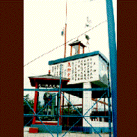

筑波山/加波山/茨城県真壁町等
筑波山の北部に位置する加波山は観光的には地味な所だが、石材関係者(御影石の産地である)と山岳信仰マニアにはその名をひそかに轟かせているスポットである。
加波山神社や三枝祗神社の火渡りなどが一応有名どころとされているが(知らねえか)、そんな山岳信仰パワーを一身に受けて登場したニューフェイスが天狗之庭なのである。
この天狗之庭、知らないで訪れたら、一瞬何の施設なのか判るまい。
四隅に建つ照明塔(しかもソーラーシステム採用らしい)、周りを囲む高い金網＆有刺鉄線、そしてその金網の向こうにあるラバーコート敷きのだだっぴろいスペース、その両脇には観客席らしきもの。やけにガラの悪いテニスコートといった風貌だ。
しかし数秒後にはそこがただものでないことがよーく判るはずだ。
敷地内に建つ一番大きなピロティー形式の建物の壁面にはアートトラック調の天女と龍が描かれており、その上には石山修武風の鉄製の風車が立っている。
そのピロティ越しに赤い鳥居が4本立っていて、それを見て初めて神社であることを知るのだ。
入り口付近に回るとあずまやが2つあり、その中には天狗様がいる。
そして看板が、主神.天中坊大天狗.加波根不動明王.等々。
どうやら修験道者の修行場らしい。
それにしてもこの天狗之庭、看板に愛の花園とまで銘打っているのに何とも宗教感に乏しい。テクノロジーと天狗信仰というまるで違うものがただ同じ場所にあるあるだけという即物的な風景はこんなにも違和感があるものなのか、と唯々感心した。
背後には採石場があり発破の爆音が響きまくる、なかなか物騒なロケーションです。
その他、筑波山にはガマ公園、ガマ迷路など、お脳のとろけるスポット満載。人生に疲れたら一度行ってみるべし。
珍寺大道場 HOME